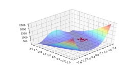
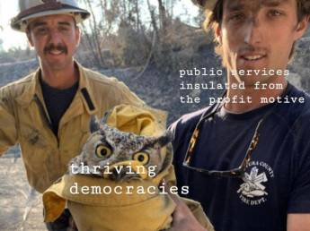

Tweets - Log
Oliphant saz protocol overloading (like the + operator) is one of the key reasons why he chose Python over other langs.
Norwegian scientist: ‘No way’ of reaching climate neutrality without hydrogen https://t.co/iJ5Tsn8lC1 #hydrogen #GreenHydrogen #Hydrogen4Climate #renewableenergy
— Gilman Industries (@GilmanHydrogen) November 6, 2019
Targeted bombings of cartel compounds? Mansions even? That requires AMLO going extrajudicial on their ass and bypassing MX military (bcz of possible leakage).
Hmm.. should US fight drug cartels through stealthy paramilitary forces, hell maybe even poisoning the drug supply causing demand to fall?
That's like, a Tom Clancy novel dude. Clear and Present Danger, 1993.
That's weird. I'd just recently watched a docu on them; apparently there is a big Mormon presence there, and they fell into some trouble w drug gangs. Mitt's family is from this region.. Anyway I thought docu was going to say after losing some members to gang killing they'd turn the other cheek while reaching to that can of... WHOOP-ASS! No. That didnt happen, docu showed bunch of guard posts.. The Mormons have some arms, there was some whoop-ass but not at the scale the gangs threathened them.
"On Monday, gunmen killed three women and six children from a Mexican-American Mormon family in northern Mexico"
Stop bitchin.. You not H.N.I.C. Double M.G.... I.D.D.Q.D.
The HNIC is at MIT teaching ODE. Nam sayin'?
T-Mobile got this merger approved after spending nearly $200,000 at Trump's hotels.
— Bernie Sanders (@BernieSanders) November 6, 2019
This is a disastrous decision.
When we're in the White House we're going to end this corruption and break them up. https://t.co/4mkx55otkd
Talking smack on Twitter eh?
That is grammatically incorrect
— zerohedge (@zerohedge) November 5, 2019
Companies' (of SP500) earnings decreased by 2.7% so far.
{kind=link}
Wut?? Is this true? The Guardian lost it?
Don't make kick your ass TG.
Guardian Media Group,publisher of the Guardian and Observer,sold the remaining 50.1% of its stake to Apax Partners,who now own 100%. Whatever the Guardian used to be in terms of being 'left wing', it certainly isn't now. A quick look at 'Apax Partners' will immediately show that!
— TheMasses (@HopePM4) November 6, 2019
From Urbandictionary: "'Fo shizzle my nizzle' means 'I concur with you whole heartedly my Africian american brother'"
I guess I was thinking of chiseling as in scraping.
If US regulators want to, we can rock'n roll. I'll tell you where to lay down the law. Bring in the hurt. How to chizzle the shizzle
(I dont even know what that means)
Taking little samples of the Rosenbrock bitch

Fire those retro-rockets, shoot the fruton torpidos, and like uhhh-uhhh make us go - that way.
#butthead #trek
They do? AFAIK all deep net models are automatically differentiable (as good as symbolic differentiation). If this is true, this person (whoever they are) must be dealing with freaky cost functions.
"Most machine learning tasks — from natural language processing to image classification to translation and many others — rely on derivative-free optimization to tune parameters and/or hyperparameters in their models. "
What is going on in Lebanon? Lebanon is a weird place; technically it shouldn't even exist, it was created mainly due to French.
But again lack of leadership (which especially struggles to be representative of a made-up place like Lebanon) can be a cause.
Interesting. That's a culture code right there.
"Thanks to the Austrian scientist Peter Schuster and his associates, though, the RNA library is not a lost cause. One of the grandfathers of computational biology in Europe, Schuster is now a retired professor at the University of Vienna, where he taught since the 1970s. A first encounter with Schuster seems to confirm the stereotypes that many Europeans have of Austrians. A jovial man with a generous girth and a wry sense of humor, Schuster would not have been out of place in the traditional Viennese cafés of the last days of the Austro-Hungarian Empire, where formidably well-educated polymaths held forth on everything from psychoanalysis to quantum theory. He is a scientist in that tradition, a purebred intellectual conversant with a broad variety of subjects. Not taking himself too seriously, Schuster opines with a tongue-in-cheek attitude, peppering the gravest discourse with humorous asides. He epitomizes an oft-repeated saying about how Austrians view life and its many challenges: “The situation may be hopeless, but it is never serious'" -- Wagner, Arrival of the Fittest
She is right. Woke movies.. A lot of women don't like this stuff either, clearly, so why do they keep making them?
#herminator
Faux innovators of Silicon Valley.. who cares about what they think of anything? Did Paypal revolutionize electronic payments? If it did would there be an entire crypto space trying solve the same problem?
"@mozilla
When asked by @inafried why @venmo transactions are public by default, exec @Dan_Schulman said: 'I think the boundaries between private and public are much more blurred than it was when we were growing up.'"
Knowledge is not only used in knowledge products, but it is increasingly being subtituted for labor, hard materials and now energy. Instead of digging up some hole in the ground and getting at already-stored energy in the form of dead animals, we are now passing electricity through water making use of that knowledge to store energy.
"'Our goal is clear. We want Germany to be the global number one in hydrogen technology,' said economy minister Peter Altmaier at the government’s hydrogen stakeholder conference in Berlin. This concerns not only basic research, but also applications at an industrial scale, he said.
The government sees hydrogen made from renewables or from natural gas in combination with carbon capture and storage (CCS) as a key part of Germany’s future energy system"
"@jeremycorbyn
Secure a credible deal in three months.
Put it to the people for the final say, with the option to remain, in six months.
That’s our Brexit policy"
That looks fantastic. Awesome tech.
[#HMG] Introducing the first-ever all-hydrogen Hyundai HDC-6 Neptune truck, showing a possible future of hydrogen fuel-cell commercial vehicles. #Hyundai #NEPTUNE #FCEV #CommercialVehicle #NACVShow2019 pic.twitter.com/aw4a4IvBbR
— Hyundai Motor Group (@HMGnewsroom) November 4, 2019
Beautiful jump🐳🐬 pic.twitter.com/ZzkfnpkQQ0
— Ocean diversity (@Oceandiversity2) November 5, 2019
If 'better policies" don't matter all the time for electability, why talk about them? Good question. It all goes back to the Dem decision makers. We are saying act more econ anti-right bcz it will be better in the long run. If Bill did this back in 90s, Dems would be better position electorally today. As it turns out Dems are now 1 Prez short out of 6, with all the loss of judge appt that entails, and also now centrism having run its course with Obama there is the "Orange Hitler" problem.
@NPR
Microsoft's division in Japan tested a 4-day workweek — with no loss in pay for employees. The company says that:
• Productivity rose by 40%
• Electricity costs fell by 23%
• Meetings were put on a diet, cut from 60 minutes to 30
I don't think we realize what we gave up for cars. pic.twitter.com/v8xOIDYQ3P
— Queen Anne Greenways (@QAGreenways) November 4, 2019
"#Hydrogen used to be a kind of 'Cinderella of the gas industry'. Now we realise: it is sexy, says German economy minister @peteraltmaier"
Not surprising at all.. many animals can walk, navigate, which means they can form control actions between visual input, goal, obstacles. Pushing against the ground for actuating is not that different (in fact harder) than turning some wheel and pressing a pedal.
"[R]ats learned to drive tiny cars for science"
Black ppl don't say "poh-lice". Southerners say "poh-lice". The so-called black accent is based on the South.
Was there ever a comic character based on owls? There is for bats, spiders, fish, ants. Never heard a famous one for owls.
Haha. Odd meme. I like it.
Owls crack me up.

"@SmallpixelCar
Something only a Lidar car can do: running autonomously in dark"
"@AdamDRains
I’m continually impressed by those who retain enough mental energy at the end of a workday for creative hobbies, socialising, science communication, activism, etc.
My brain simply taps out and hoarsely whispers a request to consume, in order, 'coffee, media, dinner, sleep'".
Solve PDEs wout mesh based methods? Hell there are RBF approximation based methods to solve that too!
Yeah - f--k the mesh. I dont like mesh based methods. Go analytic, or approximately analytic and compute that.
'But Europe needed a common currency'. Europe already had a common currency. It was called the Deutsche Mark.
Bring back national currencies and layer the Bancor system on top. Surplus exporters as well as surplus importers need to pay a price for being in the surplus. Bancor would calibrate that automagically.
And someone please nuke the Swedish Central Bank.
"@fteconomics
We need to admit the euro was a mistake"
"@phildobbie
@ProfSteveKeen and I argue about Brexit – a Brexiteer and Remainer agree on one thing – the vote should never have happened"
I bet mainland Chink "history" is full of some dumbass shit too.
I hear Russkie narrative is quite moronic too. Talked abt it briefly here
It's all about finding that happy path it seems, a narrative that will show you a winner most of the time (if a loser, u redirect it to behing held down, it's never your fault). "Tigger came from Central Asia" says one -completely false, some punk motherfuckers came but melted away- which probably has to do wanting to associate with something outside the current region, and conveniently blame the loss of Balkans, and other regional troubles on "others" who were "the wrong Turks anyway".
I think psychologists are wasting their time analyzing singular people. They should focus on national psyches exclusively. There is gold here.
There are codes, which are transmitted organically. Then, seperate from that, is the national narrative which is second wave and mostly bullshit, it is top-down, created by others. As Gellner says,
Nationalism is not what it seems, and above all it is not what it seems to itself. The cultures it claims to defend and revive are often its own inventions, or are modified out of all recognition. [.. While it is being created] nationalism uses the pre-existing, historically inherited proliferation of cultures or cultural wealth, though it uses them very selectively, and it most often transforms them radically. Dead languages can be revived, traditions invented, quite fictitious pristine purities restored [..]. The cultural shreds and patches used by nationalism are often arbitrary historical inventions. Any old shred and patch would have served as well [..].
But some countries are better at this than others. The US narrative taught in schools.. "Why did we seperate from England?". "Because ruling from a distance was not effective". It is not non-sense.
Here is what TR text says abt why it lost in WWI. Uh, like, our big ally Germany lost, so we lost, indirectly, by association.
Now that sounds like a load of bunk. It's like a tough guy story, "yeah I've would have done some shit, but, they held me back son, I was gonna bring it. Kick some ass.. Yeah!". Or like a boxer, "well, I beat the other guy, but the referee, that guy man, did not give me points. It was a technical loss.. that's what it was".
At least the narrative indirectly admits it was the junior partner in the war effort, but the general outline is still somewhat 'lacking'.
😒😒😒😒😒
Havyard Taking Next Step in #Hydrogen System for Large Ships with Fuel Cells from PowerCell--Company is entering approval phase & has signed agreements with provider Linde Engineering for #hydrogen tanks @PowercellA for #fuelcells--https://t.co/Hc7m00XOzR #HydrogenNow #fuelcell pic.twitter.com/stVgMpcOF8
— FuelCellsWorks (@fuelcellsworks) November 4, 2019
The common pt of all protests? Lack of observant leadership. Follow what ppl need the most, get the data, provide the solution, calibrate for region etc. With enough right / left representation it can work.
With no leadership, we might be sleepwalking into a collapse of everything second wave.
"@william_sw
PowerCell sign development contract for maritime zero emissions solution with Havyard Group"
Ultra-low rates are probably the result of boomer psychology that fears busts of any kind. Keep avoding busts, then big names get bigger "I see these names 'on TV' all the time, I like the name 'Boeing'". Nothing gets "creatively destructed", companies can keep on living, even under huge debt, like a zombie thanks to low rates.
Parental version of this, to extent they could poison their millenial children, has to be the 'participation trophy' given in 'safe spaces' for kids running away from 'microagressions'.
"@NisreenAlKhatib
I am co-director of @QudsNen & I find myself helpless as #Twitter has today morning suspended 3 verified accounts of the network I work with, w/out offering reasons. Quds News Network is an essential site for publishing the Palestinian content in Arabic & English to the world!"
"@ninaoyama
So you’re telling me Warm Regards is fine, but Moist Regards is “weird” and “makes the office uncomfortable”?
Ok boomer".
The main villain of the show was, per the movie, the Goauld, which are modeled on pharaohs. Pharaohs are of course very much tied the agro era.
Hah. In TV show Stargate one of the worst villians, named Aschen, are space-faring farm folk. They biologically exterminate entire planets, and use it as farm land. Some Roman level genocidal shit.
F--ing farmers.
@EFF
Have you been looking for any easy way to explain the harms of face recognition to friends and family? This video should be your first stop.
It didn't take a generation. You were born there with codes of UK,so it was effortless for you. It wasnt a process whereby slowly by slowly ur parents were adapting and u were the culmination of that. For u it was a snap.
"My parents came to UK, it took a generation to adapt"
That's where he effed up; Typical I Am CRM - listening is the weakness, area of development. Then, the question is who to listen, how much to listen, when to listen.. they fumble around these things, usually messing up. He categorized they guy as "bureucrat just trying to cover his ass", and didn't listen.
Susskind, The 1 Percent Doctrine
"The 'what ifs' can kill you.
Something missed. A failure of will. A turn in one direction when the other way was the right path.
Over time, people tend to get past them. We did what we could, they say, and move on.
But, in terms of the tragedy of 9/11, a particular regret lingers for those who might have made a difference.
The alarming August 6, 2001, memo from the CIA to the President--"Bin Laden Determined to Strike in US"--has been widely noted in the past few years.
But, also in August, CIA analysts flew to Crawford to personally brief the President--to intrude on his vacation with face-to-face alerts.
The analytical arm of CIA was in a kind of panic mode at this point. Other intelligence services, including those from the Arab world, were sounding an alarm. The arrows were all in the red. They didn't know place or time of an attack, but something was coming. The President needed to know.
Verbal briefings of George W. Bush are acts of almost inestimable import in the affairs of the nation--more so than is the case for other recent presidents. He's not much of a reader, this President, and never has been, despite White House efforts to trumpet which serious books he is reading at various times. He's not a President who sees much value in hearing from a wide array of voices--he has made that clear. His circle of truly trusted advisers is small--smaller as President, in many ways, than it was when he was governor. But he's a very good listener and an extremely visual listener. He sizes people up swiftly and aptly, watches them carefully, and trusts his eyes. It is a gift, this nonverbal acuity, that he relies on in managing the almost overwhelming duties of the presidency: countless decisions each day, each one important; a daunting array of issues to grasp; an endless stream of politicized experts and expert politicos, all speaking in earnest tones. What does George W. Bush do? He makes it personal. He may not have had a great deal of experience, especially in foreign affairs, before arriving in the job, but--because of his trust in these interpretive abilities--he doesn't view that as a deficit. The expert, sitting before him, has done the hard work, the heavy lifting, and the President tries to gauge how "certain" they are of what they say, even if the issues may be unfamiliar to him. Do they seem nervous or unsure? Are they fudging? Why do they think what they do…and what do they think of him? That last part is very important.
The trap, of course, is that while these tactile, visceral markers can be crucial--especially in terms of handling the posturing of top officials--they sometimes are not. The thing to focus on, at certain moments, is what someone says, not who is saying it, or how they're saying it.
And, at an eyeball-to-eyeball intelligence briefing during this urgent summer, George W. Bush seems to have made the wrong choice.
He looked hard at the panicked CIA briefer.
'All right,' he said. 'You've covered your ass, now.'"
Where to have TR food in NY? 386 Third Avenue.
Dish: Cabbage stuffed with ground beef
I took many ppl here for fine dining.
Before that I was working at another firm near WTC, 99ish, remember going to an excellent Korean udon place nearby for lunch sometimes and reading abt the Prez campaign from MSM papers.
Yeah I remember the .com boom and bust... The consulting firm I was in helped code up something around pets let's just say..
"@Femi_Sorry
If someone like me, who'd studied EU law in 2 universities and in two different languages and who'd worked in EU affairs for 2 years in Brussels, still wasn't fully informed in 2016 (I knew nothing of Northern Ireland), then the general public wasn't making an informed decision"
Harding of Guardian talking abt being spied on
Haha.. R. Liddle - sound like a jackass alright
California.. the immigrant state. Is that why its public services suck? Get bunch of people from anywhere so they don't make many demands of the state? They just work and pay tax like a slave? So public schools suck, privatized power is only good for starting fires.
Texas Luring Jobs Away From California With Promises Of Electricityhttps://t.co/gYntnivgtT
— The Babylon Bee (@TheBabylonBee) November 3, 2019
There are 150 billionaires in the UK while 14 million people live in poverty.
— Jeremy Corbyn (@jeremycorbyn) November 1, 2019
In a fair society there would be no billionaires and no one would live in poverty.
"@NPR
Anthropologist David Graeber asked people if they thought their jobs were valuable. He was startled by the results.
'Between 37%-40% of all people who had jobs were convinced if their job didn't exist, it would make no difference at all.'"
"@hxhassan
Iraqi protests are probably the most remarkable regional event in half a decade, with remarkable implications. But it’s astonishing how under-reported they have been in mainstream media. good articles but truly amazing how this isn’t covered play by play"
Scifi TV show has a hologram computer interface (a person). Supposed to be an innocuous looking someone of course, a generic interface. I take one look, "ah, it's that actress from the show Regenesis". Now I know there is more to this hologram otherwise they'd just pick some1 less experienced. #overSciFi
True story: Elizabeth Taylor wore this ring to a party where she sat next to Princess Margaret.
PM: Don’t you think that’s a little vulgar?
ET: Would you like to try it on?
PM says yes, and can’t stop staring once it’s on her own finger.
Pause
ET: Not so vulgar now, is it...?
In 1965 the CEO-to-worker pay ratio was 20:1.
— Bernie Sanders (@BernieSanders) November 1, 2019
Last year, it was 287:1.
Workers aren't struggling because they're not working hard enough.
They're struggling because more and more wealth is going to the people on top.
We're going to reverse that and give workers a raise.
The Conservatives' 𝘁𝗲𝗺𝗽𝗼𝗿𝗮𝗿𝘆 pause of fracking is an election stunt to try and win a few votes.
— Jeremy Corbyn (@jeremycorbyn) November 2, 2019
Boris Johnson described fracking as ‘glorious news for humanity’. We cannot trust him.
Labour would ban fracking. That's real change.
Snowden, Permanent Record
"The EU, still under the sway of this postwar universalist idealism, now became the first transnational body to put these principles into practice, establishing a new directive that seeks to standardize whistleblower protections across its member states, along with a standardized legal framework for privacy protection. In 2016, the EU Parliament passed the General Data Protection Regulation (GDPR), the most significant effort yet made to forestall the incursions of technological hegemony—which the EU tends to regard, not unfairly, as an extension of American hegemony.
The GDPR treats the citizens of the European Union, whom it calls “natural persons,” as also being “data subjects”—that is, people who generate personally identifiable data. In the US, data is usually regarded as the property of whoever collects it. But the EU posits data as the property of the person it represents, which allows it to treat our data subjecthood as deserving of civil liberties protections"
Best printer for a Mac? Don't want one that forces you to register with their ink refill program. Just a simple printer that does old fashioned just prints words and images on paper without having to send info to Deep State and advertisers, too.
— Stacy Herbert (@stacyherbert) November 1, 2019
I don’t try to offend, but the more people are offended by a joke, particularly on twitter, the funnier I find it. And the angrier the tweet, the more chance of me using it and turning it to laughs and cash. PC culture isn’t killing comedy. It’s driving it. As it always did 🙏
— Ricky Gervais (@rickygervais) October 31, 2019
Automatic diff on RBF... So the crazy ass cost function which had an RBF in bombs, but sample from the crazy-ass function, create an RBF, autodiff and use that to move in a "trust region" can work.
Lots of objections to class war appearing. Totally agree. Assault on welfare state, slashing top rate and corporate tax while imposing cuts on everyone else, driving people to food banks, Universal Credit, pay freezes, growth in zero hours. Where will it end? FFS.
— Ed Miliband (@Ed_Miliband) October 31, 2019
"Write code that is easy to delete, not easy to extend"
Everything you need to know about the latest development in the powertrain of choice: #Hydrogen fuel cell power from @Cummins. https://t.co/Zwriid6OAA #Cummins #NACVShow2019 pic.twitter.com/8mj7x7yLEi
— Cummins Inc. (@Cummins) October 31, 2019